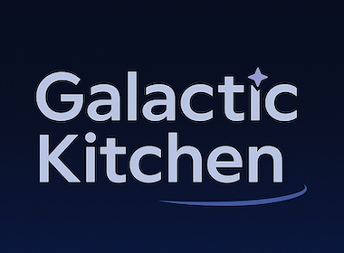
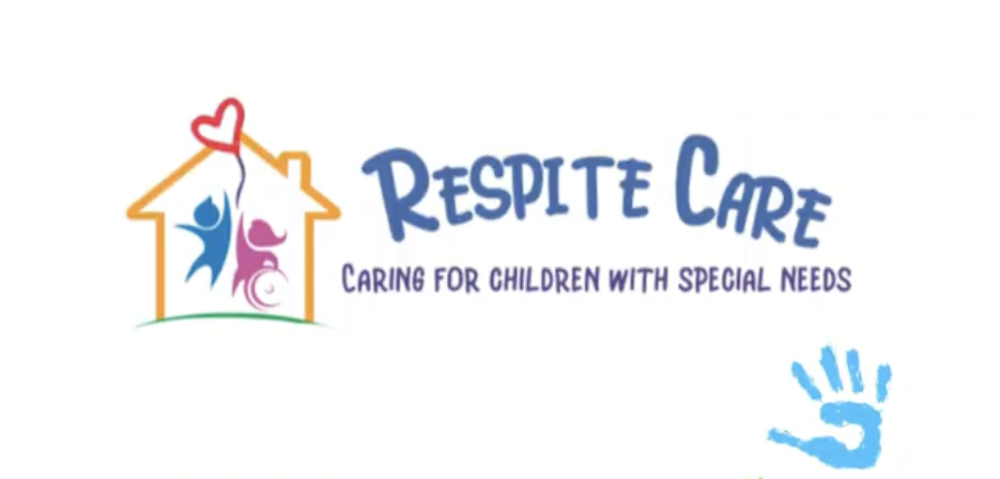

SELECTED PROJECTS
A collection of
what I create.
Choose a category to explore projects, process, and finished pieces.

01 / DIGITAL EXPERIENCES
Website Design
Layouts, concepts, and interactive website projects.
Explore category ↗
02 / BEHIND THE LENS
Photography
Observations, places, details, and moments.
Explore category ↗03 / VISUAL COMMUNICATION
Graphic Design
Posters, branding, social graphics, and more.
Explore category ↗
04 / REAL-WORLD EXPERIENCE
Internship Work
Digital content and creative work made with a team.
Explore category ↗